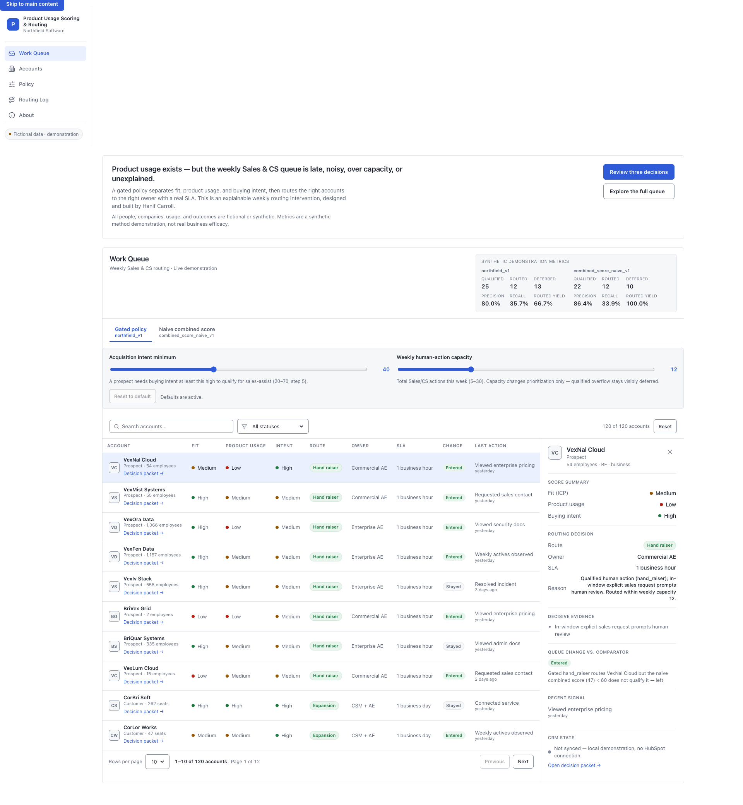
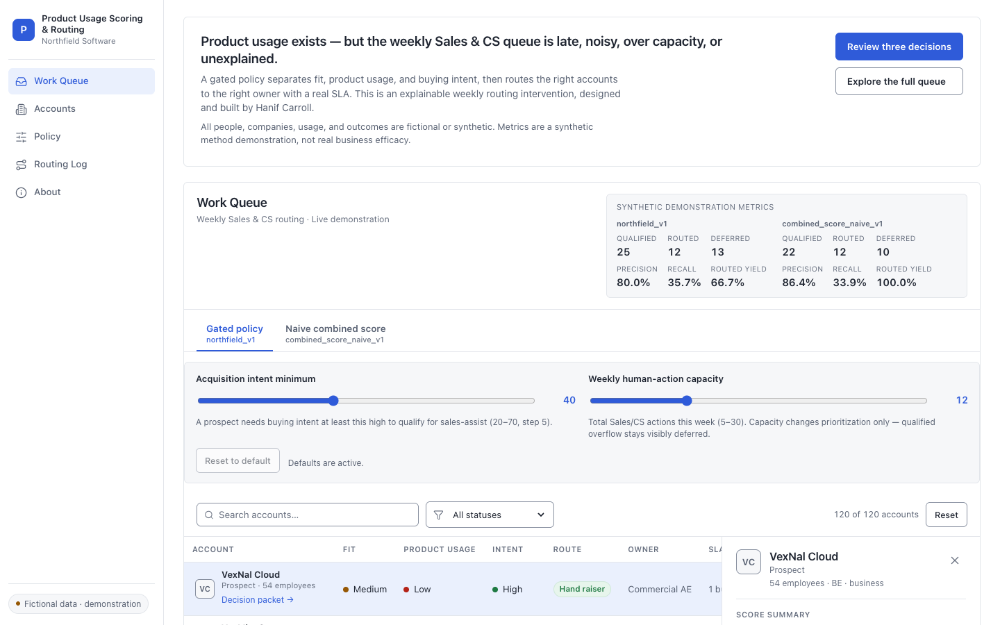
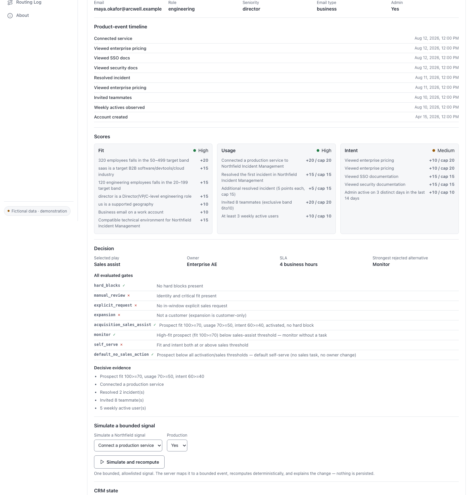

An explainable weekly Sales & CS routing system. Fit, usage, and buying intent scored separately — visible gates decide each route, and every decision explains itself.
ICP and firmographics — industry, size, role, geography, environment.
Real Northfield Incident Management signals — services connected, incidents resolved, active users.
Pricing, SSO, security, and admin activity across the account.
A score tells you where an account ranks on each dimension. It orders the list — it does not say what to do next.
Before any human action, explicit rules pick the route and assign an owner with a real SLA.
The naive 100% routed yield at capacity 12 is a small-sample artifact — all twelve routed accounts happen to carry a synthetic positive outcome. Illustrative, not a claim of predictive superiority.


No black box. Each account records exactly why it was routed.
Changing capacity reprioritizes the queue. It never changes whether an account qualifies — qualified overflow stays visibly deferred.
All people, companies, usage, and outcomes are fictional or synthetic. Scores are expert-defined demonstration hypotheses, not validated predictors — and never real business efficacy.